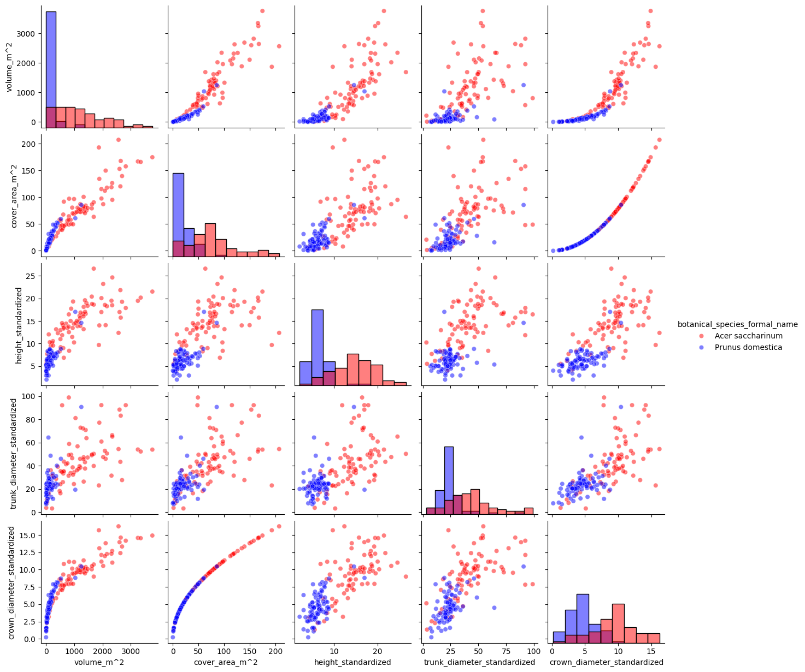

# libraries that I may potential need:
import pandas as pd
import math
import time
import os
import matplotlib.pyplot as plt
import numpy as np
import rasterio
import rasterio.warp
from rasterio.windows import from_bounds
from rasterio.warp import transform_bounds
import geopandas as gpd
from shapely.geometry import Point, box
from pandas.plotting import scatter_matrix
import random
import seaborn as sns
import fionaContinued EDA for Senior Thesis
Adding Geopatial Bounding
Dependencies
Variables
Used Google Translate to reencocde variable names:
| original variable name | translated variable name |
|---|---|
| gattung_botanisch | botanical genus |
| gattung_deutsch | German genus |
| art_botanisch | botanical species |
| art_deutsch | German species |
| alleebaum | avenue tree |
| hoehe | height |
| stammdurchmesser | trunk diameter |
| stammumfang | trunk circumference |
| kronendurchmesser | crown diameter |
| baumpatenschaft | tree sponsorship |
# set path to data set
path_tree = '../data/data_gov_de/trees/baeume.json'
path_parks = '../data/data_gov_de/parks/parkanlagen.json'
path_cemeteries = '../data/data_gov_de/cemeteries/friedhoefe.json'
convex_hull_test_kml = '../data/derived/rostock_convex_hull_test_subset.kml'
path_test_kml = '../data/derived/rostock_trees_test_subset.kml'
# create german to english variable name map
recoded_column_names = {
'gattung_botanisch' : 'botanical_genus' ,
'gattung_deutsch' : 'German_genus' ,
'art_botanisch' : 'botanical_species' ,
'art_deutsch' : 'German-species' ,
'alleebaum' : 'avenue_tree' ,
'hoehe' : 'height' ,
'stammdurchmesser' : 'trunk_diameter' ,
'stammumfang' : 'trunk_circumference' ,
'kronendurchmesser' : 'crown_diameter' ,
'baumpatenschaft' : 'tree_sponsorship' ,
'bezeichnung' : 'designation' ,
}
# set standard deviation limit to constrain outliers
sd_limit = 3
# isolate cohorts for analysis that are not outliers and have less than n units min_count = 50
min_count = 35
# Gausian smoother coefficient
smother_sd = 1/2Functions
def kml_export(gdf:gpd.GeoDataFrame, path:str, espg:int = 4326):
"""
# Export a GeoPandas dataframe as a *.kml file
## Expects a gpd.DataFrame.
## Path literal must end in '.kml'.
"""
# depenencies
import fiona
# enable KML support
fiona.drvsupport.supported_drivers['KML'] = 'rw'
# cast to required CRS
export_gdf = gdf.to_crs(epsg=4326)
# export
export_gdf.to_file(path, driver='KML')
def CRS_printer(gpd:gpd.GeoDataFrame):
"""
# Prints the current Cordiante Reference System (CRS) for a GeoPandas (gpd) Dataframe.
## Expects:
- a gpd.DataFrame object
"""
if hasattr(gpd, 'crs'):
print(f"CRS Object: {gpd.crs}")
return gpd.crs
else:
print("No explicit CRS found using geojson library.")
def list_printer(a_list:list, number_of_items_to_print:int = 10000, span:int=80):
"""
# Formated list printer
## Expects:
- A list like object
- number of items from list to print. Default 10000
- max length of page in. Assumes terminal is using fixed width font. Default 80
## Returns: Prints a formated list.
"""
counter = 1
list_len = len(a_list)
max_len = len(max(a_list, key=len)) + 2
if span > max_len:
cols = round(span / max_len )
else: return f'span {span} must be greater than len of longest item in list {max_len} +2'
for i in a_list:
if counter > number_of_items_to_print:
break
elif counter % cols == 0:
print(f'{i:^{max_len}}')
else:
print(f'{i:^{max_len}}', end= ' | ')
counter += 1
def round_to_nearest_n(x, base):
"""
# Rounds a value to the nearest multiple of 'base'.
"""
return base * round(x / base)
def series_limit(series:pd.Series, sd_limit:int= 1) -> pd.Series:
"""
# Mask values in a pandas series greater or equal to a limit.
Limit defined by the number of standard devations away from the series mean the value is.
Assumes a guasian distribution.
"""
sample_sd = series.std()
sample_mean = series.mean()
limit = sample_mean + (sample_sd*sd_limit)
mask = series <= limit
return mask Load Tree Data
# read GeoJson data into a GeoPandas DF
tree_gdf = gpd.read_file(path_tree, encoding='utf-8')Clean Tree Data
translate variable names
# map translated variable names
tree_gdf = tree_gdf.rename(columns=recoded_column_names)split variable
# Split common name and species variable and create two new features
# - botanical_species_formal_name
# - botanical_species_common_name
tree_gdf[['botanical_species_formal_name', 'botanical_species_common_name']] = tree_gdf['botanical_species'].str.split(' „', expand=True).fillna(pd.NA)
tree_gdf['botanical_species_common_name'] = tree_gdf['botanical_species_common_name'].str.replace('“', '')
# Create mask for botanical_species_formal_name containing the string 'species'
# - We are isolating units where a generalization from a species to a genus was made.
mask_botanical_species_formal_name = tree_gdf['botanical_species_formal_name'].str.contains('species')
# set masked recs to NA
tree_gdf.loc[mask_botanical_species_formal_name, 'botanical_species_formal_name'] = pd.NAlist unique species
# aint-subset units whose species has been generalized to a genus to a list
species = tree_gdf['botanical_species_formal_name'][~mask_botanical_species_formal_name].unique().tolist()mask outliers
# we create a mask to subset by trees whose height within
# `sd_limit` standard deviations of the mean height
# - Note: The tallest tree in Germany is about 68 meters.
# - Trees taller than that are excluded.
mask_height = series_limit(tree_gdf['height'],sd_limit)
# we create a mask to subset by trees whose trunk_diameter is within
# `sd_limit` standard deviations of the mean trunk_diameter
mask_trunk_diameter = series_limit(tree_gdf['trunk_diameter'],sd_limit)
# we create a mask to subset by trees whose trunk_circumference is within
# `sd_limit` standard deviations of the mean trunk_circumference
mask_trunk_circumference = series_limit(tree_gdf['trunk_circumference'], sd_limit)
# we create a mask to subset by trees whose crown_diameter is within
# `sd_limit` standard deviations of the mean crown_diameter
mask_crown_diameter = series_limit(tree_gdf['crown_diameter'],sd_limit)
# generate a uniform mask that excludes outliers across all continuious variables
# - Note: We do not drop these units, as these are still trees
# and may contribute to a future competitive density feature.
mask_non_outlier = mask_height & mask_trunk_diameter & mask_trunk_circumference & mask_crown_diameter
# isolate cohorts for analysis sans-outliers, having >= n units
# counts by species of non outliers.
non_outlier_cohort_counts = tree_gdf[mask_non_outlier].groupby('botanical_species_formal_name')\
['botanical_species_formal_name'].count()
# list of cohorts that meet minimum representation
valid_species = non_outlier_cohort_counts[non_outlier_cohort_counts > min_count].index.to_list()
# mark those records whoes species cohort meets minimum representation...
tree_gdf['qualified_species_representation'] = tree_gdf['botanical_species_formal_name'].isin(valid_species)
# ... and that do not contain outliers.
tree_gdf['in_qualified_cohort'] = tree_gdf['botanical_species_formal_name'].isin(valid_species) & mask_non_outliercorrecting digit preference bias
Note: See EDA_20260209 for evidence of rounding bias.
# generate features with gausian smoother
# round height to nearest integer ...
tree_gdf['height_standardized'] = tree_gdf['height'].round()
# ...and apply smoother:
tree_gdf['height_standardized'] = tree_gdf['height_standardized'].apply(lambda x: x+ np.random.normal(loc=0, scale=smother_sd))
# round crown_diameter to nearest integer ...
tree_gdf['crown_diameter_standardized'] = tree_gdf['crown_diameter'].round()
# ...and apply smoother:
tree_gdf['crown_diameter_standardized'] = tree_gdf['crown_diameter_standardized'].apply(lambda x: x+ np.random.normal(loc=0, scale=smother_sd))
# round trunk_circumference to nearest 9th centimeter ...
tree_gdf['trunk_circumference_standardized'] = tree_gdf['trunk_circumference'][tree_gdf['trunk_circumference'].notna()].apply(lambda x: round_to_nearest_n(x, base=9))
# ...and apply smoother:
tree_gdf['trunk_circumference_standardized'] = tree_gdf['trunk_circumference_standardized'].apply(lambda x: x+ np.random.normal(loc=0, scale=smother_sd*9))
# round trunk_diameter to nearest 3rd centimeter ...
tree_gdf['trunk_diameter_standardized'] = tree_gdf['trunk_diameter'][tree_gdf['trunk_diameter'].notna()].apply(lambda x: round_to_nearest_n(x, base=3))
# ...and apply smoother:
tree_gdf['trunk_diameter_standardized'] = tree_gdf['trunk_diameter_standardized'].apply(lambda x: x+ np.random.normal(loc=0, scale=smother_sd*3))Generate abstraction features
# generate baseline abstraction feature: volume
tree_gdf['volume_m^2'] = tree_gdf['height_standardized'] * (math.pi*((tree_gdf['crown_diameter_standardized']/2)**2))
# generate baseline abstraction feature: cover_area
tree_gdf['cover_area_m^2'] = (math.pi*((tree_gdf['crown_diameter_standardized']/2)**2))Review
tree_gdf.sample(5)| uuid | botanical_genus | German_genus | botanical_species | German-species | avenue_tree | height | trunk_diameter | trunk_circumference | crown_diameter | ... | botanical_species_formal_name | botanical_species_common_name | qualified_species_representation | in_qualified_cohort | height_standardized | crown_diameter_standardized | trunk_circumference_standardized | trunk_diameter_standardized | volume_m^2 | cover_area_m^2 | |
|---|---|---|---|---|---|---|---|---|---|---|---|---|---|---|---|---|---|---|---|---|---|
| 51689 | 655f53be-6114-4e05-b5a3-c0481b9e710f | Sorbus | Mehlbeere | Sorbus aucuparia | Gemeine Eberesche | False | 4.5 | 10.00 | 31.42 | 2.0 | ... | Sorbus aucuparia | <NA> | True | True | 3.646654 | 1.389678 | 36.952397 | 10.164514 | 5.531116 | 1.516765 |
| 6192 | f6267ae0-a91b-42b5-b411-e4d1d203bd33 | Betula | Birke | Betula pendula | Sand-Birke | True | 10.0 | 23.00 | 72.26 | 5.0 | ... | Betula pendula | <NA> | True | True | 10.022438 | 5.181283 | 66.677746 | 25.445048 | 211.318697 | 21.084560 |
| 51937 | f70df423-fa1c-4ff7-b7dd-0b86342aba86 | Sorbus | Mehlbeere | Sorbus intermedia | Schwedische Mehlbeere | True | 5.0 | 5.73 | 18.00 | 1.0 | ... | Sorbus intermedia | <NA> | True | True | 5.345265 | 1.035630 | 19.698720 | 7.205235 | 4.502650 | 0.842362 |
| 6361 | cc8b371b-8e6d-432f-98aa-e7f347c4fff5 | Tilia | Linde | Tilia platyphyllos | Sommer-Linde | True | 10.0 | 30.00 | 94.25 | 8.0 | ... | Tilia platyphyllos | <NA> | True | True | 9.698002 | 8.555030 | 87.252494 | 29.726493 | 557.462013 | 57.482149 |
| 55362 | d4209f1c-a2b1-40b3-b9b7-131e5e9d1c48 | Crataegus | Weißdorn | Crataegus lavallei „Carrierei“ | Apfeldorn „Carrierei“ | False | 6.0 | 17.00 | 53.41 | 7.0 | ... | Crataegus lavallei | Carrierei | True | True | 6.440178 | 7.337640 | 47.656879 | 18.687617 | 272.333162 | 42.286588 |
5 rows × 22 columns
# matrix by species - comparison
## randomly select two valid species
rand_species_A = random.choice(valid_species)
rand_species_B = random.choice(valid_species)
# subset by species A
subset_A_with_labels = tree_gdf.loc[(tree_gdf['botanical_species_formal_name'] == rand_species_A) &
(tree_gdf['in_qualified_cohort']),
['botanical_species_formal_name', 'volume_m^2','cover_area_m^2','height_standardized',
'trunk_diameter_standardized','crown_diameter_standardized']]
# subset by species B
subset_B_with_labels = tree_gdf.loc[(tree_gdf['botanical_species_formal_name'] == rand_species_B) &
(tree_gdf['in_qualified_cohort']),
['botanical_species_formal_name', 'volume_m^2','cover_area_m^2','height_standardized',
'trunk_diameter_standardized','crown_diameter_standardized']]
# sample from each species 70% of the size of the smallest population
sizeA = subset_A_with_labels.shape[0]
sizeB = subset_B_with_labels.shape[0]
size = [sizeA if sizeA <= sizeB else sizeB]
size = round(size[0]*.7)
print(f'Sample size = {size}:')
# join subsets (Interesting that there is no gpd.concat. gpd relies on pd.conccat)
subset_with_labels = pd.concat([subset_A_with_labels.sample(size),subset_B_with_labels.sample(size)])
# pairplot
sns.pairplot(subset_with_labels,
hue='botanical_species_formal_name',
palette={rand_species_A: 'red', rand_species_B: 'blue'},
diag_kind='hist', # Can also use 'kde' for smooth curves
plot_kws={'alpha': 0.5})Sample size = 80:
EDA - Round 2
Remember:
Copernicus 10m pixel desity measurment is the response varaible
Consideration → Convert to Copernicus CRS first?
Copernicus uses EPSG:3035
General Defintions and rules
Rule: Competition is constrained by polygon membership
Define radius (r) for competition and diveristy
- Notes on Neighborhood Competition Indices” (NCI)
- esajournals.onlinelibrary.wiley.com/doi/10.1002/ecs2.1273
- It appears that influence tapers beyond 10 meters
- Max crown_diameter in dataset is 21.95891198439781.
- So, we could pull
- 20 meters from trunk (Uniform)
- or 10 meters from edge of radius (Dynamic Crown-scaled radius) Note:
- We do not break sampling frame.
- Trees across polygon boundaries, but within a radius are not considered.
- Notes on Neighborhood Competition Indices” (NCI)
Define Polygon edge buffer
- (We are modeling the public forest network)
Polygon buffer for inclusion in study
- Buffer outside the edge risks inclusion unobserved trees.
- Need to be able to adjust this dynamically
- Or… Make a choice on a park by park basis after manual review?
For each tree:
- Define whether it is in a:
- cemetery polygon
- parks polygon
- Mark the apporpreate (bezeichnung) for each.
- Mark it’s euclidian distance to the edge of the polygon
- Define denisty
- n_neighbors: (count excluding self)
- crown_area_sum proxy: sum of crown_diameter^2
- Define diversity
- species_richness: number of unique species
- shannon_index: robust diversity index
For each municipal polygon
- Polygon-level density
- Tree-level local density
- Cross-scale competition
- Area (m^2)
- Perimiter (m^2)
Validate
- Export inclusive trees as *.klm files and review in Google Earth on a per park basis
Load public bounding boxes
# load parks polygons
parks_gdf = gpd.read_file(path_parks, encoding='utf-8')
# load cemeteries polygons
cem_gdf = gpd.read_file(path_cemeteries, encoding='utf-8')# Check cordiante reference system (CRS) for all loaded GeoJsons matches
CRS_printer(tree_gdf)
CRS_printer(parks_gdf)
CRS_printer(cem_gdf)
print()CRS Object: EPSG:3035
CRS Object: EPSG:4326
CRS Object: EPSG:4326
# convert CRS from `EPSG:4326` to `EPSG:3035` to align with copernicus data
tree_gdf.to_crs(epsg=3035, inplace=True)
parks_gdf.to_crs(epsg=3035, inplace=True)
cem_gdf.to_crs(epsg=3035, inplace=True)# map translated variable names
cem_gdf = cem_gdf.rename(columns=recoded_column_names)
parks_gdf = parks_gdf.rename(columns=recoded_column_names)# build features
# type
cem_gdf['type'] = 'cemetery'
parks_gdf['type'] = 'park'
# perimeter
cem_gdf['perimeter_m'] = cem_gdf['geometry'].length
parks_gdf['perimeter_m'] = parks_gdf['geometry'].length
# area
cem_gdf['area_m^2'] = cem_gdf['geometry'].area
parks_gdf['area_m^2'] = parks_gdf['geometry'].area# concatnate parks and cemetery polygons
pc_gdf = pd.concat([cem_gdf,parks_gdf])# spaitial leftouter-join trees to parks and cemeteries
# Note: Keeping all trees in origional dataset for now.
enriched_tree_gdf = gpd.sjoin(left_df= tree_gdf,
right_df= pc_gdf[['designation','type','geometry']],
how='left',
predicate='intersects'
).drop(columns=['index_right'])# Heuristic Data Cleaning (Each Park and cemetery.)
# --------------------------------------
# 1. The Context Dictionary
# You can tune each park's 'tightness' (ratio) or processing style here
# Parameter Override Map
park_configs = {
'Neuer Friedhof Rostock': {'ratio': 0.1, 'explode': True, 'method': 'concave'},
'Barnstorfer Wald': {'ratio': 0.3, 'explode': False, 'method': 'concave'},
'Wallanlagen': {'ratio': 0.05, 'explode': True, 'method': 'exterior'}, # Very jagged!
# ... add the rest of your 40 parks
}
# 2. The Universal Processor
def process_park_envelope(group):
park_name = group.name
# Fallback to defaults if park isn't in your dict
config = park_configs.get(park_name, {'ratio': 0.5, 'explode': False, 'method': 'convex'})
# Handle Explosion
if config['explode']:
geom = group.explode(index_parts=False).geometry
else:
geom = group.geometry
# Handle Shape Logic
if config['method'] == 'concave':
envelope = geom.concave_hull(ratio=config['ratio'], allow_holes=False)
elif config['method'] == 'exterior':
# Follows the actual fence line but ignores internal holes
envelope = geom.apply(lambda g: g.exterior if g.geom_type == 'Polygon' else g.boundary)
else:
envelope = geom.convex_hull
return envelope
# 3. Execution
# Group by your designation and apply the manual logic
custom_hulls_series = pc_gdf.groupby('designation', group_keys=False).apply(process_park_envelope)
# Convert back to a GeoDataFrame for your sjoin_nearest
final_hulls_gdf = gpd.GeoDataFrame(geometry=custom_hulls_series, crs=pc_gdf.crs)# For each tree within a polygon, find distance to nearest polygon edge
# subset the enriched_tree dataframe down to those records that are within polygons.
# Note: use of .copy()
subset_gdf = enriched_tree_gdf[enriched_tree_gdf['type'].notna()].copy()
# prep the envelope (Convex Hull)
# pc_hulls = pc_gdf.copy()
# pc_hulls.geometry = pc_hulls.geometry.convex_hull.explode().exterior
# ---OPTION 1
# Create a tighter 'Concave' Hull
# ratio=0.2 is usually a good starting point for L and U shapes
# pc_hulls = pc_gdf.copy()
# pc_hulls.geometry = pc_hulls.geometry.concave_hull(ratio=0.4, allow_holes=False).boundary
# Note: allow_holes=False is key here because you specifically
# told me you want to ignore the 'mess' on the interior!
# Ensure it's a GDF for the join
# pc_hulls_gdf = gpd.GeoDataFrame(pc_hulls, crs=pc_gdf.crs)
#---
#---OPTION 2
# 1. Separate the disjointed enclaves into individual shapes
pc_exploded = pc_gdf.explode(index_parts=False).copy()
# 2. Calculate the tight hull for each individual patch
pc_exploded.geometry = pc_exploded.geometry.concave_hull(ratio=0.3, allow_holes=False).boundary
# 3. Proceed with sjoin_nearest as before
pc_hulls_gdf = gpd.GeoDataFrame(pc_exploded, crs=pc_gdf.crs)
#---
# spatial leftjoin-nearest subset to polygons and record distance to nearest edge
# (up to 500 meters away)
subset_gdf = subset_gdf.drop(columns=['index_right'], errors='ignore')
subset_gdf = gpd.sjoin_nearest(
left_df=subset_gdf,
right_df=pc_hulls_gdf,
how='left',
max_distance=500,
distance_col='dist_to_edge'
)
# join the subset_gdf back to enriched_tree_gdf.
enriched_tree_gdf = enriched_tree_gdf.join(subset_gdf[['dist_to_edge']], how='left')
# # delete temp dataframes
# del (pc_hulls)
# del (pc_exploded)
# del (pc_hulls_gdf)
del (subset_gdf)enriched_tree_gdf.sample(5)| uuid | botanical_genus | German_genus | botanical_species | German-species | avenue_tree | height | trunk_diameter | trunk_circumference | crown_diameter | ... | in_qualified_cohort | height_standardized | crown_diameter_standardized | trunk_circumference_standardized | trunk_diameter_standardized | volume_m^2 | cover_area_m^2 | designation | type | dist_to_edge | |
|---|---|---|---|---|---|---|---|---|---|---|---|---|---|---|---|---|---|---|---|---|---|
| 67568 | a0d27e29-4222-443d-a4ed-7b7e7254dbce | Prunus | Kirsche | Prunus serrulata „Shirofugen“ | Zier-Kirsche „Shirofugen“ | False | 5.0 | 40.11 | 126.00 | 6.0 | ... | True | 4.580911 | 6.372094 | 132.443200 | 38.862335 | 146.085170 | 31.889980 | NaN | NaN | NaN |
| 58574 | 4c15ac7d-2351-432f-bbb5-162394adadf1 | Tilia | Linde | Tilia platyphyllos | Sommer-Linde | True | 15.0 | 56.98 | 179.00 | 7.0 | ... | True | 15.256506 | 6.830028 | 181.625431 | 57.303347 | 558.971779 | 36.638256 | Rosengarten | park | 22.618651 |
| 57440 | 4d3be78d-09ec-4d45-8d9e-45dd26bbd8f6 | Fraxinus | Esche | Fraxinus excelsior „Westhof’s Glorie“ | Esche „Westhof’s Glorie“ | True | 11.0 | 31.83 | 100.00 | 7.0 | ... | True | 12.065468 | 7.373496 | 100.134138 | 31.258572 | 515.206068 | 42.700877 | NaN | NaN | NaN |
| 32190 | 017a4f8d-08fd-4ae1-a6e3-f5cef3c1cfa7 | Tilia | Linde | Tilia cordata | Winter-Linde | False | 15.0 | 64.00 | 201.06 | 11.0 | ... | True | 14.559398 | 10.598287 | 204.688248 | 63.033988 | 1284.412902 | 88.218817 | NaN | NaN | NaN |
| 16 | 574c4cc1-1ca4-413c-a9b3-77ba6d84b777 | Prunus | Kirsche | Prunus species | Kirsche | False | 8.0 | 30.00 | 94.25 | 7.0 | ... | False | 7.350763 | 7.014220 | 90.507138 | 28.982786 | 284.041074 | 38.641031 | NaN | NaN | NaN |
5 rows × 25 columns
# Valid trees that remain:
new_count = enriched_tree_gdf[enriched_tree_gdf['type'].notna() & enriched_tree_gdf['in_qualified_cohort']]\
.groupby('botanical_species_formal_name')['botanical_species_formal_name'].count()
new_count[new_count>min_count].shape[0]44cem_gdf['designation'].unique()array(['Alter Friedhof Gehlsdorf', 'Friedhof Toitenwinkel',
'Westfriedhof', 'RuheForst Rostocker Heide', 'Friedhof Biestow',
'Kriegsgräberfelder Stephan-Jantzen-Park',
'Neuer Friedhof Rostock', 'Neuer Friedhof Warnemünde',
'Jüdischer Friedhof', 'Sowjetischer Soldatenfriedhof',
'Neuer Friedhof Biestow'], dtype=object)# Inspect in Google Earth as *.klm file
subset_to_kml = enriched_tree_gdf[
(enriched_tree_gdf['designation'] == 'Neuer Friedhof Rostock')].copy()
subset_to_kml['Name'] = subset_to_kml['botanical_species_formal_name']
# 'Google Earth looks specifically for a column named `Name` (case-sensitive) to use as the label that floats next to the pin.'
subset_to_kml.sample(2)| uuid | botanical_genus | German_genus | botanical_species | German-species | avenue_tree | height | trunk_diameter | trunk_circumference | crown_diameter | ... | height_standardized | crown_diameter_standardized | trunk_circumference_standardized | trunk_diameter_standardized | volume_m^2 | cover_area_m^2 | designation | type | dist_to_edge | Name | |
|---|---|---|---|---|---|---|---|---|---|---|---|---|---|---|---|---|---|---|---|---|---|
| 55307 | bd522a04-1b95-431d-bf2e-9df504b7799a | Quercus | Eiche | Quercus robur „Fastigiata“ | Pyramiden-Eiche „Fastigiata“ | False | 10.0 | 28.0 | 87.96 | 3.0 | ... | 9.373376 | 4.476537 | 93.885126 | 25.958059 | 147.526594 | 15.738897 | Neuer Friedhof Rostock | cemetery | 142.138443 | Quercus robur |
| 48132 | a7022d1e-489d-4dac-8cec-90e9a1d3cd41 | Picea | Fichte | Picea omorika | Serbische Fichte | False | 21.0 | 39.0 | 122.52 | 4.0 | ... | 20.401999 | 3.537369 | 117.721807 | 39.712125 | 200.504146 | 9.827671 | Neuer Friedhof Rostock | cemetery | 86.223590 | Picea omorika |
2 rows × 26 columns
kml_export(pc_hulls_gdf, convex_hull_test_kml)
del(pc_hulls_gdf)
kml_export(subset_to_kml, path_test_kml)
del(subset_to_kml)Notes on review:
Some parks will need to be excluded due to polygon complexity. Or method will have to be fixed - Rostock, Hanse- und Universitätsstadt